1 Build
Follow visual steps with materials, numbered stages and guidance for adults.
Discover a collection of 200+ creative STEM projects with illustrated instructions and accessible materials. Explore science and robotics through practical activities at home.
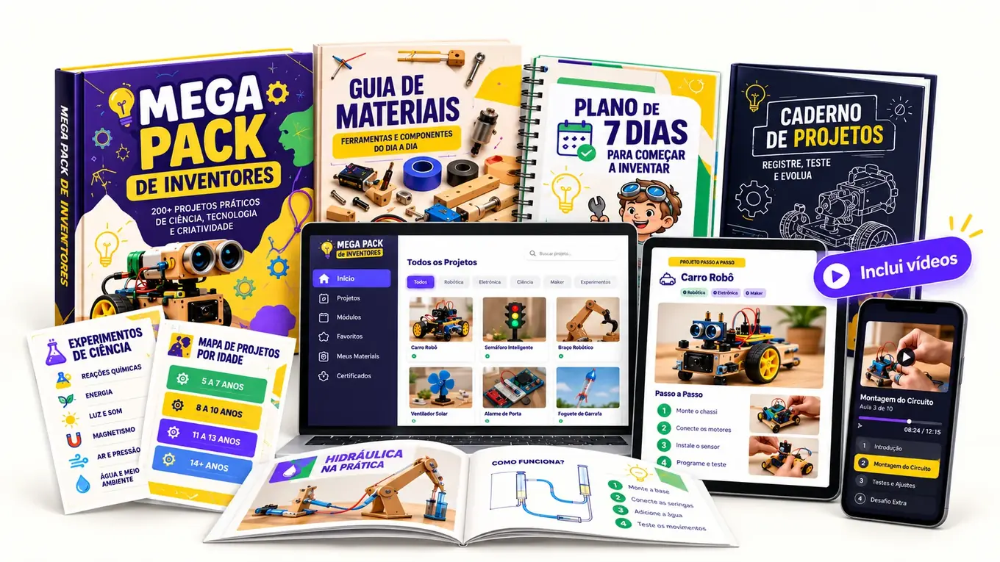
Digital materials. Additional practical videos are available in the Complete Kit.
Explore sample projects with pictures, materials lists and easy-to-follow visual instructions.
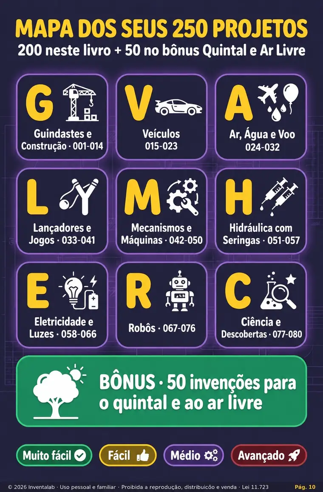
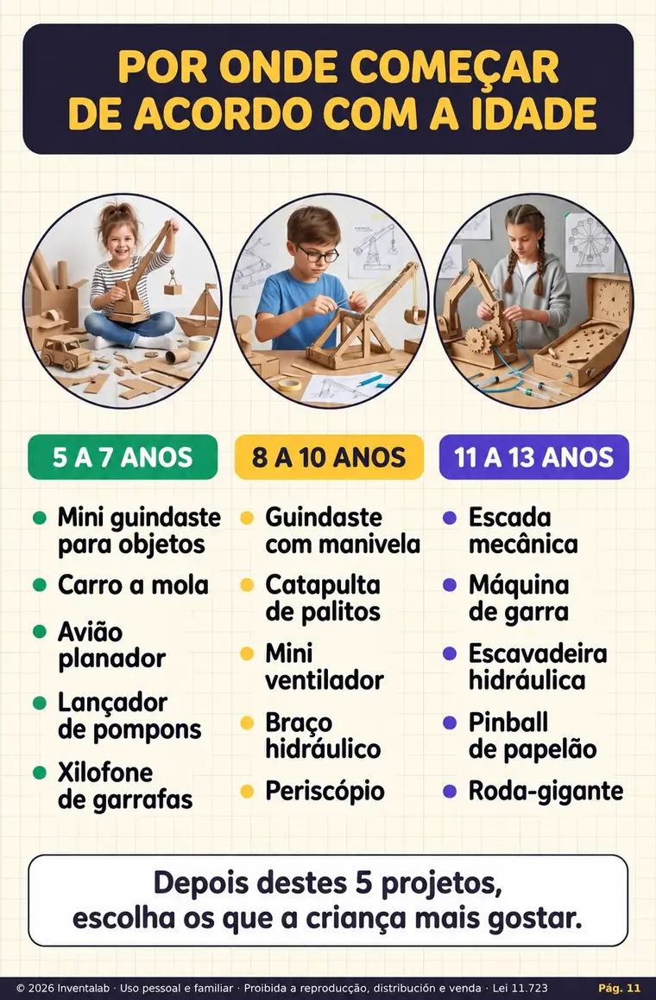
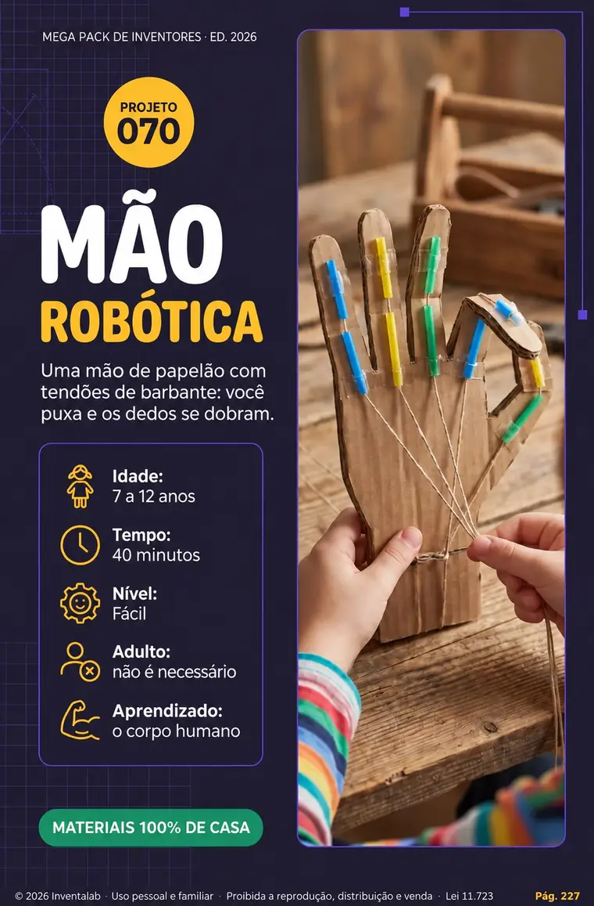
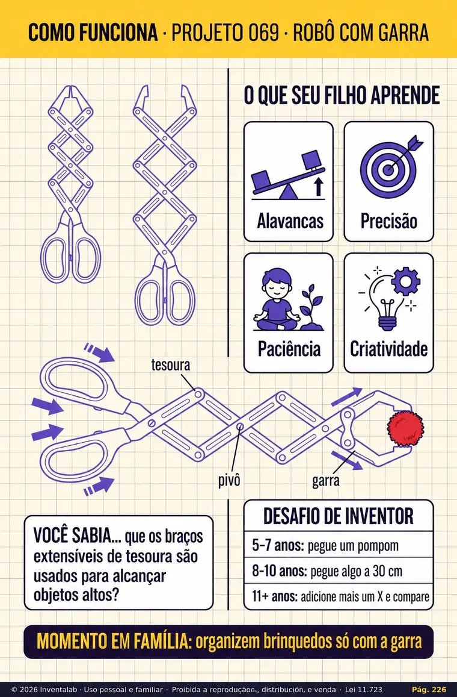
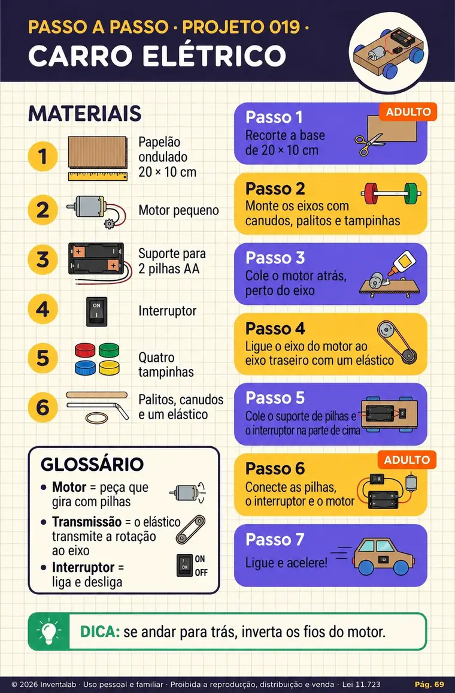
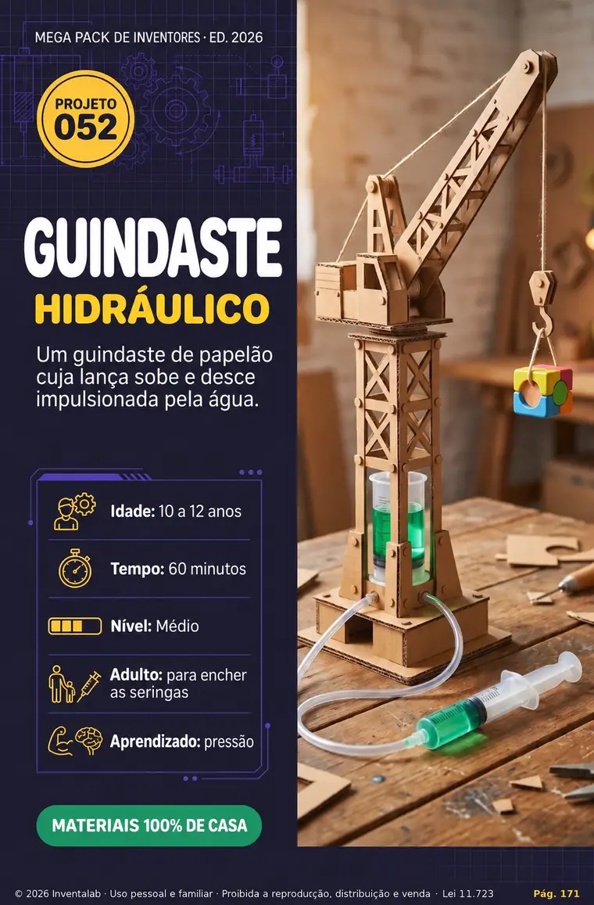
Follow visual steps with materials, numbered stages and guidance for adults.
Explore the science behind each project: levers, circuits, hydraulics and air.
Try a new idea and make your own version of the invention.
Choose activities according to age, available time and the level of adult supervision needed.
When your child gets bored, screen time often feels like the easiest option.
You have tried crafts, but finding a new activity every week can be a challenge.
Family time can easily become more time spent watching a screen.
It can be difficult to find an activity that feels both fun and meaningful.
Sometimes you simply want a practical alternative that you can enjoy together.
Over 200 activities that turn everyday materials into creative discoveries.
“Look! I made it myself!”
Enjoy the excitement of seeing an idea take shape.
Make the most of everyday moments by exploring, building and learning as a family.


Helpful additional guides to get started, explore new challenges and record discoveries.
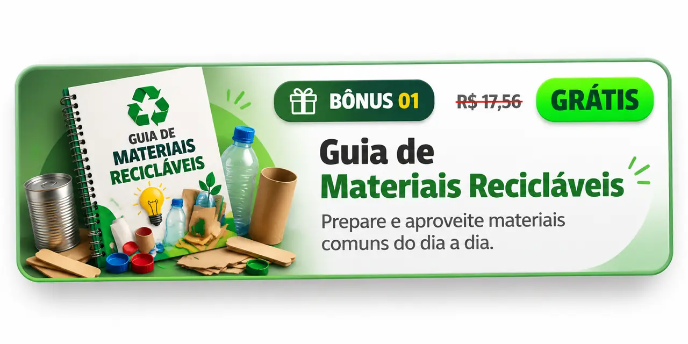
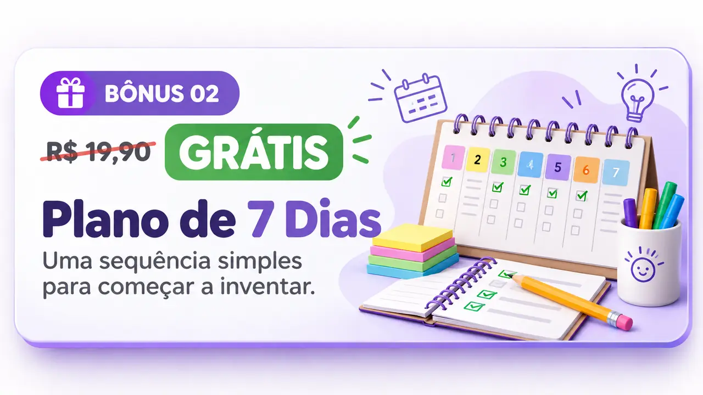
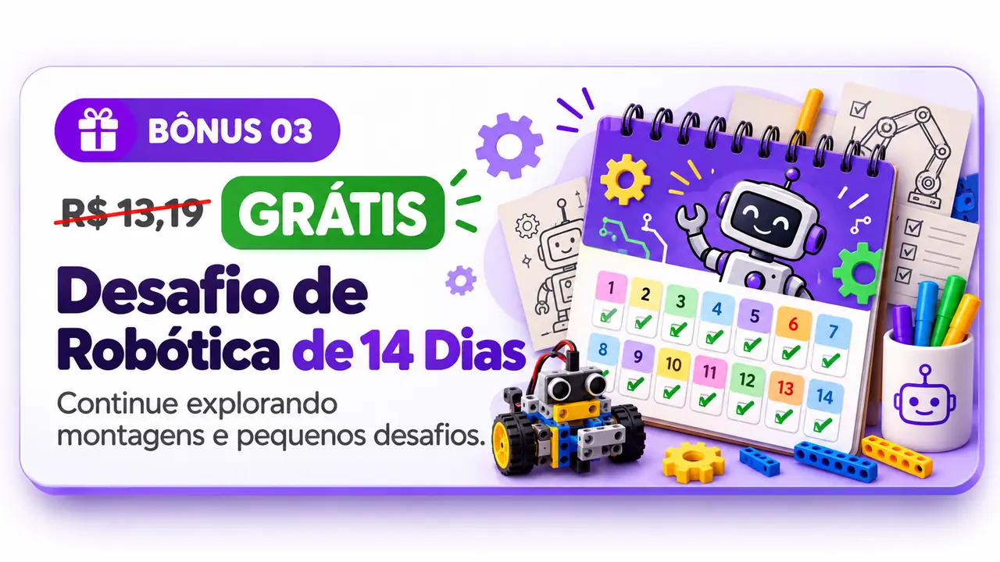
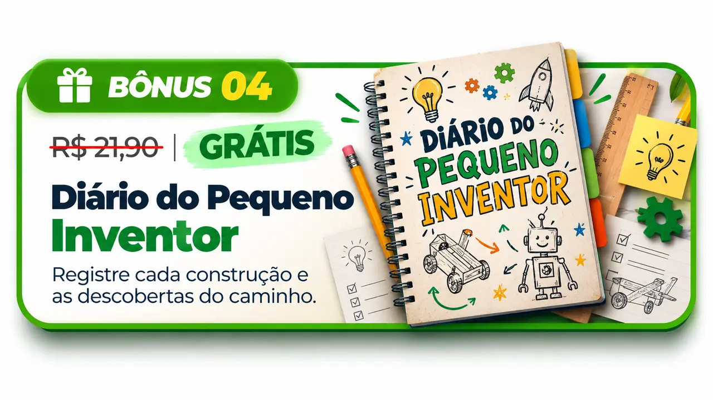
Original-language messages are not presented as South African testimonials.


Compare both options. Each includes the four bonus guides and access to the purchased digital materials.
Build, discover and learn at your own pace.
One-time payment
South African checkout is being prepared · ordering is not yet available
Extra projects, videos and exclusive resources.
One-time payment
South African checkout is being prepared · ordering is not yet available
For just R60 more, the Complete Kit includes 50 extra projects, ten videos, two exclusive guides and access to the private members area.
| What you get | Essential | Complete |
|---|---|---|
| Over 200 projects | ✓ | ✓ |
| 50 additional projects | — | ✓ |
| Digital access e vitalício | ✓ | ✓ |
| Recycled Materials Guide | ✓ | ✓ |
| Seven-Day Activity Plan | ✓ | ✓ |
| Fourteen-Day Robotics Challenge | ✓ | ✓ |
| Young Inventor Project Journal | ✓ | ✓ |
| Five robotics videos | — | ✓ |
| Five experiment videos | — | ✓ |
| Science Fair Projects | — | ✓ |
| First Circuits | — | ✓ |
| Private members area | — | ✓ |
Payment methods, delivery information and refund terms will be confirmed before the South African launch.
No. Young Inventors is a collection of digital educational materials. Craft and electronic components are not shipped.
Over 200 projects and four bonus guides, designed for learning through building and experimenting.
The Essential contents plus additional projects, videos, two exclusive guides and a private members area.
No prior experience is required for the beginner activities. Adult supervision and support depend on the child's age and the project.
Yes, some projects use everyday recycled items while others require basic craft or electronic components.
Prices are shown in South African rand. Checkout and payment information are being prepared. This is a preview page and is not yet taking orders.
We will publish the final delivery and support instructions before enabling purchases.
Explore the kits and get inspired by a world of hands-on projects.
EXPLORE THE OPTIONS